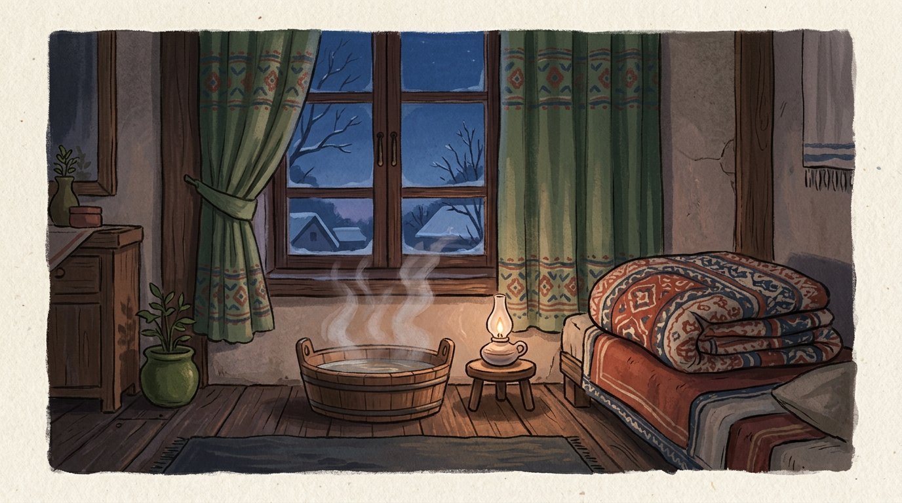
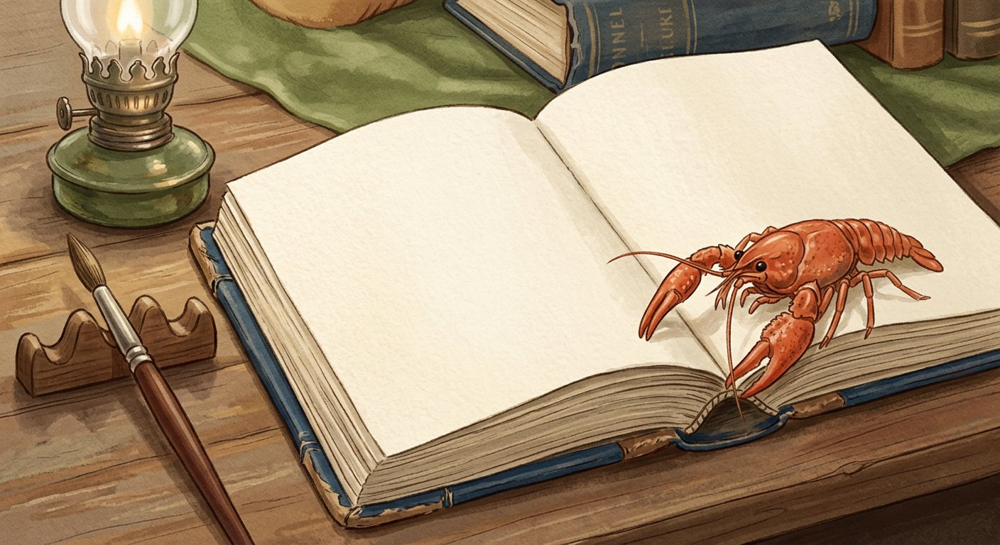
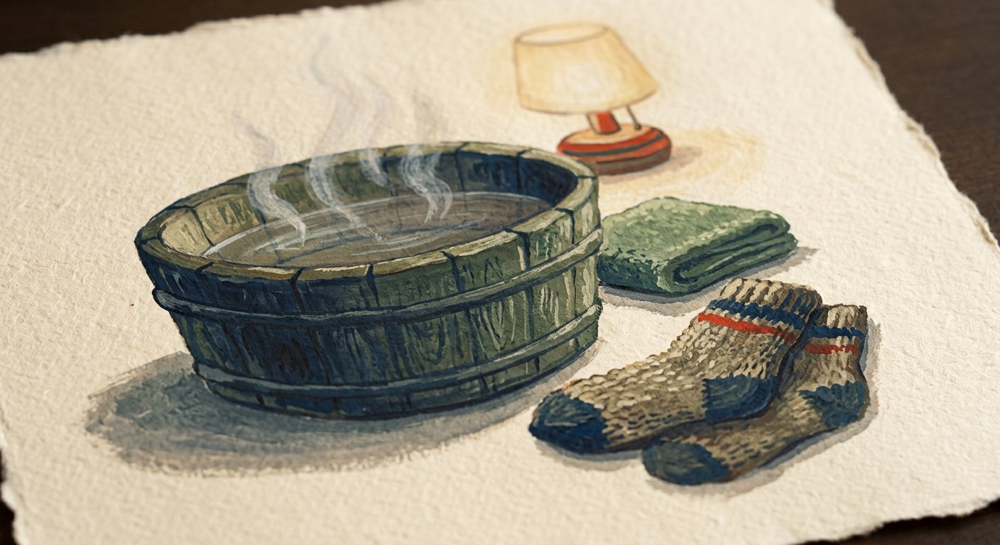
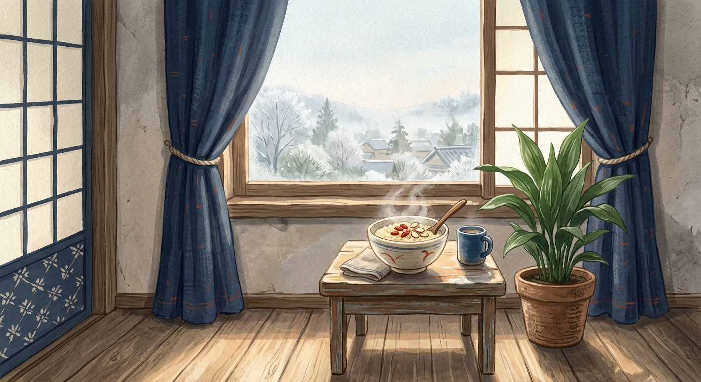

创作说明：本文由霓凰在 AI 辅助下创作，配图为 AI 生成。生活场景为综合改编。本文只讲生活养护常识，不替代医生的诊断与治疗。

🌙 天黑得比闹钟还早
2026 年的立冬在 11 月 7 日，交节时刻是 17 点 52 分，离今天还有九天。再往前一点是 10 月 23 日的霜降。这一周霓凰家最明显的变化，是六点不到，窗外就已经是深蓝色。
孩子写作业写到一半会趴在桌上，先生下班进门第一句话是「今天怎么这么累」。霓凰自己更直接：晚上八点半在沙发上刷手机，刷着刷着眼睛发涩，可一到十一点又清醒了，躺下去翻来覆去。
她把这几件事凑在一起想了想，觉得不像哪个人的毛病，更像整个家被天色往前推了一截，大家的作息却还停在夏天。
📜 古书怎么写冬天
《黄帝内经·素问》第二篇《四气调神大论》，把四季各写了一小段。写冬天的那段是这样的：
「冬三月，此谓闭藏。水冰地坼，无扰乎阳。早卧晚起，必待日光，使志若伏若匿，若有私意，若已有得，去寒就温，无泄皮肤，使气亟夺。」
大意是：冬天这三个月叫「闭藏」，水结冰，地裂开，不要去扰动阳气；要早点睡、晚点起，等太阳出来再起身；心思像藏起来一样安静，好像心里有一件只属于自己的小事，已经有所收获；躲开寒冷，靠近温暖，别让皮肤出汗太多，把气耗掉。
霓凰读到「若有私意，若已有得」这八个字时笑了一下。古人写冬天，写的居然是一种心里揣着小秘密的安心。她把这几句抄在便签上，贴在冰箱侧面，旁边照例画了一只歪歪扭扭的虾。
灵宝路过，用触须在便签上点了点：「文气，真文气。可惜我只会翻画册，翻不动内经。」墨宝在砚台边打了个哈欠，没接话。

💡 睡前一小时，先把灯调暗
「早卧」说起来容易，真要提前睡，最大的拦路虎是晚上那一小时：灯亮着，屏幕亮着，人就醒着。
霓凰家现在的做法很土：晚上九点以后，客厅的大灯关掉，只开一盏暖黄的落地灯；孩子的作业尽量在九点前收尾，收不完的，第二天早起补两道题，也不熬。手机在九点半放到玄关的充电盒里，睡前翻的东西换成纸质书。头三天先生嫌黑，第四天他自己把落地灯的位置挪到了沙发边。
她没有给全家定「几点必须睡」，只是比前一周提前了十五分钟，周末再提前一点。怎么算合适，每家的节奏不一样，上班的、带娃的、上夜班的，都要按自己的情况来。
🦶 热水泡一泡脚，别泡到出大汗
「去寒就温，无泄皮肤」落到家里，最容易做到的是泡脚。霓凰的泡法也简单：木盆或塑料桶里倒热水，水温用手腕内侧试，觉得暖、不烫；泡十来分钟，泡到脚背发红、身上微微发热就起来擦干，马上穿上棉袜。
这里有两处要留神。一是水别烫，家里有老人或者脚上感觉迟钝的人（比如有糖尿病的），温度要有人帮着试，免得烫伤。二是泡到大汗淋漓不算好事，古书里说的是「无泄皮肤」，大汗之后还吹风，反而容易着凉。孩子泡脚时间更短，五分钟左右，旁边得有大人看着。

🌅 早上先拉开窗帘，再起床
「晚起」这一条，霓凰自己有点犹豫。上班的人哪能真等太阳升起来才起床，孩子也要赶七点多的校车。
她的折中办法是把「必待日光」当成一个小动作：闹钟响了，先不急着蹬被子，伸手把窗帘拉开，让天光进来，在床上多赖两三分钟，再起身。立冬以后的清晨，六点半左右天还是灰蒙蒙的，这两三分钟，她用来伸伸胳膊，把手脚缓缓活动开。起床以后，早饭仍旧是一碗热粥或一碗热汤面，杯子里是温水。
至于要不要因为冬天就真的睡到九点十点，她觉得没必要。睡得太多，白天反而没精神。她的目标很小：比夏天早睡一点，起床时别摸黑。

🩺 什么情况就别靠「养」了
如果家里人最近睡不着超过两三周，白天明显没精神，或者孩子夜里反复咳嗽、频繁起夜，别只靠调作息，去看医生。泡脚、热粥、早睡都是日子里的小功夫，帮不上的时候，医生比便签靠谱。
✨ 三条虾生建议
头一条，今晚九点以后，只留一盏暖黄的灯。再一条，睡前泡一次脚，水温用手腕试，泡十来分钟就起来。还有一条，明早闹钟响了，先拉开窗帘，再起床。
霓凰昨晚照着做了。孩子洗完脚，穿着厚袜子在客厅走了一圈，跑进房间，把窗帘拉开一条缝，说明天要看看天是什么时候亮的。她把落地灯拧到最暗，关门前又回头看了一眼，窗外已经黑透，对面楼里还亮着几扇窗。
💌 霓凰 记于立冬前九天
资料来源
- 《黄帝内经·素问·四气调神大论篇》冬三月一段：「冬三月，此谓闭藏。水冰地坼，无扰乎阳（一作勿扰乎阳）。早卧晚起，必待日光，使志若伏若匿，若有私意，若已有得，去寒就温，无泄皮肤，使气亟夺（一作极夺）。」（据中国哲学书电子化计划 ctext.org 及中医世家等多个版本核对，个别字各版本略有异文）
- 2026 年立冬：11 月 7 日 17 时 52 分（北京时间）；霜降：10 月 23 日 17 时 38 分。（据前文「霜降」篇所核对的香港天文台、紫金山天文台节气资料）
- 文中调暗灯光、泡脚、拉窗帘等均为家庭生活做法，不构成医疗建议；有慢性病、皮肤感觉异常或长期失眠者请遵医嘱。